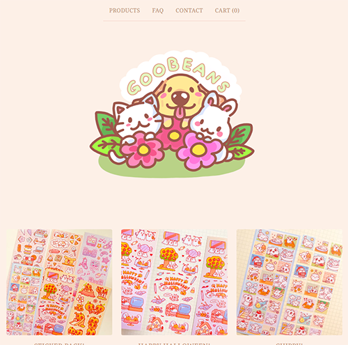
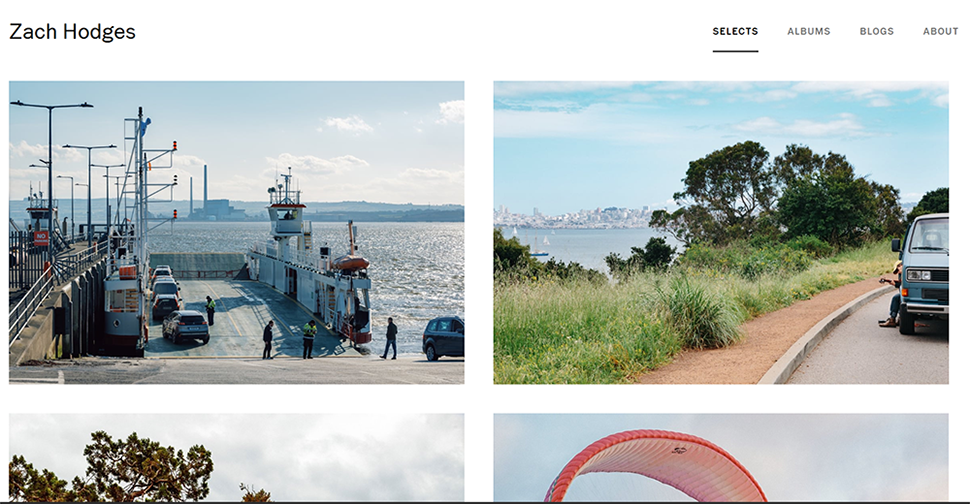

For my interactive narrative project, I wanted to go for an illustrated photo album, where I incorporated my own photography and illustrations of my mini persona to convey a fun adventure through different parts of my life. Since my illustrations are cartoonish and fun, I wanted my website to reflect that through its color and visual style.
For inspiration, I found two websites that align with my vision for content layout and tone. The first site I found is a shop site for the artist Goobeans, which captures a whimsical tone through its cute illustrations and soft colors. I like the layout as well, where the header image is a big focus and the rest of the content follows in a structured layout. There is an interesting balance of space that I also want to incorporate, where the header is large and mostly empty, and the content is a bit crowded to emphasize the separate groups. The only things about the site that I would approach differently is the visual contrast, adding in more colors or varying shades to increase legibility and emphases.

Another website I found is a portfolio site for the photographer Zach Hodges. His content is similar to what I’m going for, where the photos would be the main focus, and I think he does an excellent job of creating that vibe. I like the idea of having the navigation and header for the subpages arranged differently to create that space for the content to pop. He also utilizes the minimalist style to create strong emphasis, as the images stand out against the white background, and while they do take up a lot of space on the page, the grid layout makes it more refined. The only thing I would further develop in my own site would be playing around with color and space between the images, to incorporate text and create a good balance.
